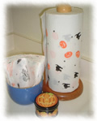
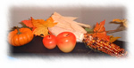

10月の日記(1)
10月の日記(1)

[前の日記] [過去の日記一覧へ] [次の日記]
新しいものは上になります。下
から読んでね(^^)


[前の日記] [過去の日記一覧へ] [次の日記]

[ホーム]

|
2001年10月9日(火) 晴れ 「原宿で二人展」 うっかりしてました。うちの妹のだんな、森眞二さんの個展ならぬ、二人展が 原宿（表参道）で開かれています。10月8日(月)〜13日(土)です。もうちょっ と早めに書こうと思っていたのに、すっかり忘れてしまっていました。 案 内はこちらにあります。卓上カレンダーも販売するようです。森さんの絵 はやさしい透明感があってすごく素敵です。いっしょに展示される篠原さんと いう方は私は知らないのですが、なんとなくユニークで面白そうな絵です。ぜ ひ、行ってみてくださいね。 妹たちのホームペー ジ から森さんの作品を見ることができます。妹の 日記にも搬入の様子とか、初日のオープニングパーティのことが書いてあ るので見てみてくださいね。 2001年10月7日(日) 晴れ 「もうすぐハロウィン」 ハロウィンのことはこんな風に毎年書いて ますが、カリフォルニアに来てからは、ハロウィンが近くなると部屋の中を飾 り付けることも忘れていません。 いつも小さな本物のかぼちゃを買って、右の写真のような入れ物を出して、部 屋のどこかに飾っています。ここに来た最初の年は、ハロウィンの当日に子供 たちが「Trick or Treat」に来たときのためにお菓子も買ったのですが、最初 のアパートも、引っ越した先のアパートも、子供は来ませんでした。 今のアパートには去年の12月に引っ越してきたけど、子供は来るのかな？  今年は飾り付けをもっと増やすことにしました。毎年、あっというまにすぎて しまうので買い忘れてしまっていましたが、左の写真のような、キッチンペー パーやペーパーナプキンも、ハロウィン用に売り出されているんですよ。 手前のオレンジ色の缶はろうそくです。かぼちゃの顔が描かれています。なん となくおもしろくて買いました。  そしてこんな風に、部屋の中も枯草と、コーンを乾燥させたもの、りんごのろ うそくを飾ってみました。オレンジ色と黒でまとめると、ぐっと秋らしくなり ますよね(^^) |
|
新しいものは上になります。下から上に読んでね(^^) |
[前の日記] [過去の日記一覧へ] [次の日記]
[ホーム]